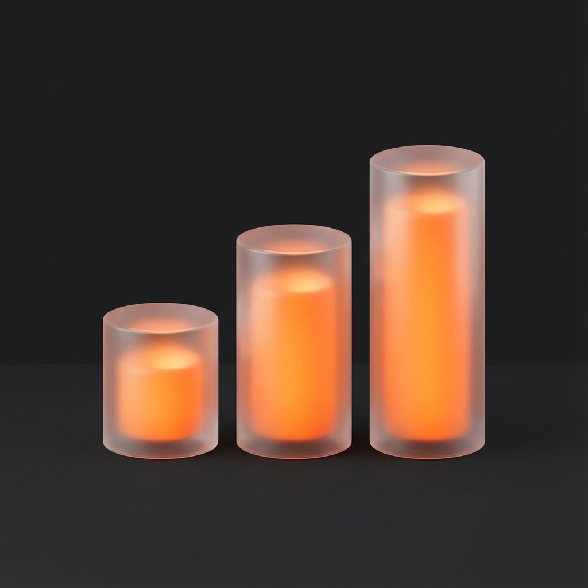

사람은 조금 늘지만, 대화의 복잡도는
기하급수적으로 폭발합니다.
이 구간에서는 아무도 잘못하지 않아도
맥락이 유지되기 어렵습니다.
가장 혼란스러운 이유 1위
보이지 않는 비효율에 대한 호소
우리 팀 인원 수
매일 슬랙/팀즈에서 던지는 가벼운 질문으로, 팀의 보이지 않는 '초기 기울기'를 24시간 모니터링합니다.
Q-ALIGN 엔진이 텍스트 뒤에 숨겨진 맥락을 분석하여, 리더와 팀원 사이의 '해석의 격차(Drift)'를 찾아냅니다.
문제가 커지기 전에 리더에게 알림을 보내고, 즉시 실행 가능한 'Action Item'을 제공하여 정렬을 맞춥니다.
팀원들은 부담 없이 답변하고, 리더는 핵심만 파악합니다.
내 일이 나를 성장시키는가
일에 집중을 방해하는 요소가 있는가
팀과의 협업이 잘 맞물리는가
의사결정이 고객 기준에 맞는가
내 일이 회사 비전과 연결되는가
심리적으로 안전하게 일하고 있는가
하루 한 번의 정렬 루틴이
팀의 기준을 세우고 흐름을 만듭니다.

오늘 팀에게 중요한 것이,
단번에 명확해집니다.
기준이 맞춰지면 팀은 자연스럽게
같은 속도로 움직입니다.
판단이 한 방향으로 모이는 순간,
조직의 실행력은 최고로 올라갑니다.
하루 3초 입력만으로 팀의 에너지 흐름과 미뤄지는 일이 선명하게 드러납니다. 이제 ‘감’이 아니라 데이터로 판단할 수 있습니다.
정렬 기울기를 기준으로 리더가 취할 1–2가지 행동이 자동으로 요약됩니다. 리더십의 갈피를 잡아주는 실질적인 도구입니다.
기준 차이가 발견된 지점을 감지해 어디서 엇갈렸는지 선명하게 드러냅니다. 불필요한 회의 없이 필요한 순간에만 대화를 시작할 수 있습니다.
Q-ALIGN은 팀이 이미 열심히 일하고 있음에도 목표와 사람 상태 사이에 어긋남이 생기고 있는 순간을 먼저
알려줍니다.
성과가 떨어진 뒤가 아니라, 아직 말로 설명되지 않은 초기의 불균형 신호를 진단합니다.
아니에요. Q-ALIGN은 점수를 매기거나 평가하기 위한 설문이 아닙니다.
하루 한 번의 짧은 질문을 통해, 지금 팀이 어떤 대화를 필요로 하는지를 드러내는 진단 도구예요.
부담을 줄이기 위해 설계됐어요. 정답을 요구하지 않고, 지금 느끼는 상태를 있는 그대로 적으면 끝이에요.
누군가를 평가하거나 비교하지 않습니다.
팀원은
· 왜 이 일을 하는지
· 지금의 일이 어디로 연결되는지
· 혼자만 느끼는 불편인지
를 말하지 않아도 드러낼 수 있어요. 개인의 감정이 아니라 팀의 상태로 번역됩니다.
Q-ALIGN은 리더에게 “지금 이 목표가 사람 상태에 비해 어떤지”를 바로 보여줍니다.
누가 문제인지가 아니라, 어떤 대화를 열어야 하는지를 알려줘요. 그래서 리더는 관리자가 아니라
조율자로 행동할 수 있어요.
결과는 지시가 아니라 힌트입니다.
오늘은 무엇을 설명해야 하는지, 어떤 연결을 다시 말해줘야 하는지, 어디서 속도를 조절해야 하는지를 제안합니다.
충돌하지 않습니다. Q-ALIGN은 일을 바꾸지 않고, 일을 바라보는 기준을 정렬합니다.
기존 목표 관리, 일정 관리 도구 위에 자연스럽게 얹힙니다.
오늘 팀이 가장 많이 보내고 있는 신호를 요약한 것입니다.
칭찬이나 평가가 아니라, 지금 팀이 원하고 있는 대화의 방향이에요.
여러 팀원의 응답을 종합해, 오늘 리더가 할 수 있는 가장 영향력 있는 한 가지 행동을 제안합니다.
작지만, 팀의 정렬을 다시 맞추는 데 집중합니다.
아니요. Q-ALIGN은 사람을 지목하지 않습니다.
항상 상태와 흐름만 보여줍니다.
Q-ALIGN은 침묵 속의 기울기를 가시화하는
유일한 OS입니다.